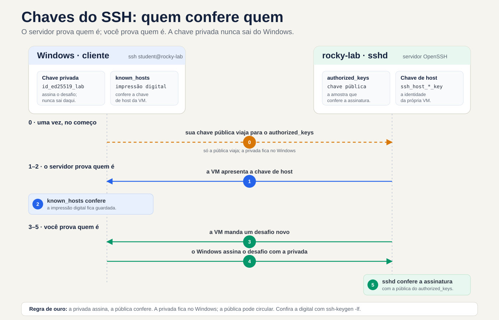
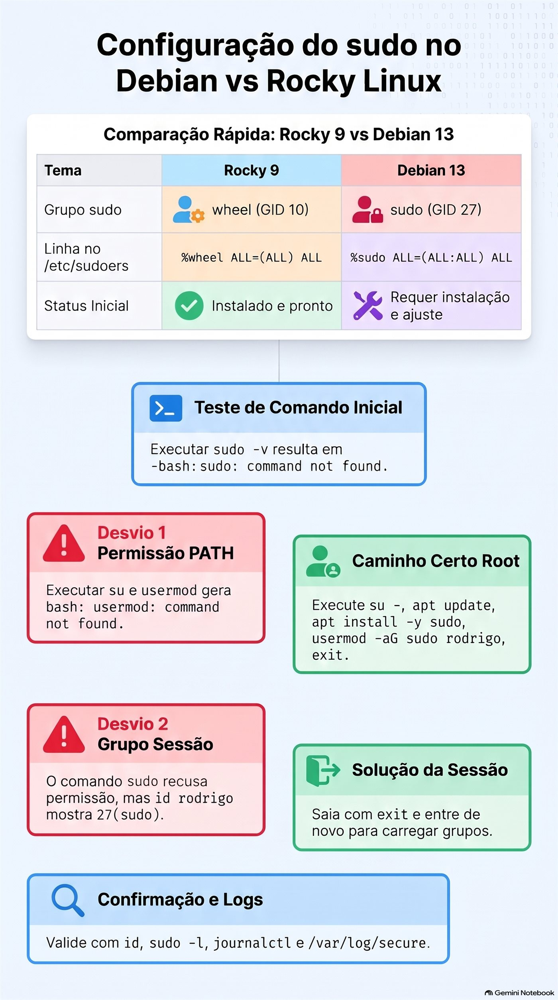
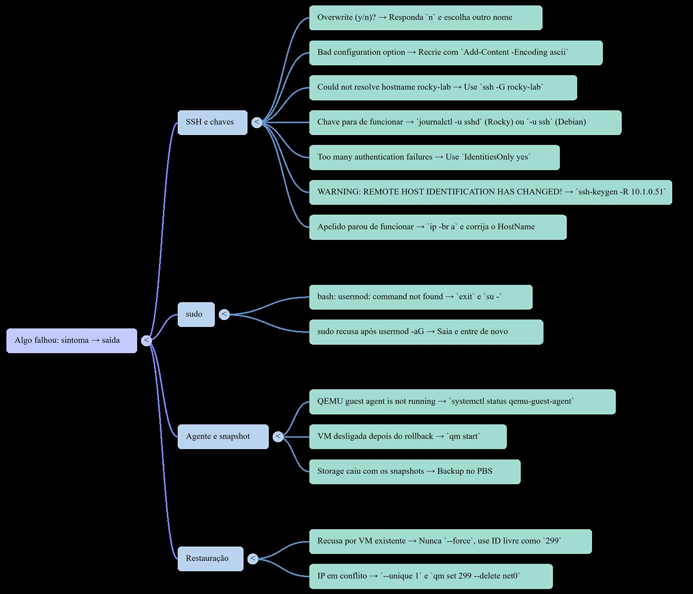

Lezione 0.2 · Accesso e protezione
Inizi ad accedere alle VM tramite il terminale Windows con una chiave SSH, ottenendo sudo su entrambe le distribuzioni e impostando la rete di sicurezza del corso: snapshot per annullare un errore in pochi secondi e backup su PBS per sopravvivere alla perdita di spazio di archiviazione.
| File | lezione 0.2 |
|---|---|
| Modulo | M0 · Laboratorio, lezione 2 di 2, che chiude il modulo |
| Quando | Settimana 1 |
| Alla fine puoi | Accedi alle VM con ssh rock-lab utilizzando una chiave Ed25519 solo lab; usa sudo in entrambe le distribuzioni e spiega perché Debian non lo aveva; parlare con le VM tramite l'agente guest; scattare, tornare indietro e pulire le istantanee; effettuare e testare un backup su PBS |
| Articoli di prova | LE 015.1 · RHCSA: accesso SSH tramite chiave |
| Prerequisiti | lezione 0.1; Windows 10 o 11, che dispongono già del client OpenSSH |
| Tempo | Intorno alle 2:30 |
| Istantanee | m0a2-inizia dall'inizio; m0a2-end nel mezzo del laboratorio, perché è ciò che ti salva nella sfida; Alla fine, dopo aver pulito il modulo, rimangono solo m0a2-fim |
1 · Riscaldamento
Tre domande prima di iniziare. Rispondi mentalmente, per iscritto o ad alta voce, senza fare ricerche: anche l'ipotesi sbagliata insegna, perché la lezione ti dimostrerà dove hai fallito. Le risposte si trovano nella chiave di risposta, alla fine della lezione.
- Amministra i server Windows tramite RDP. Cosa cambia quando l'accesso remoto è di solo testo, come SSH? Pensa alla larghezza di banda, all'automazione e alla registrazione di ciò che è stato fatto.
- Lo spazio di archiviazione
vm-hdddel cluster è perso per sempre. Lo snapshotm0a1-fimdella VM 201 ti salva? Perché? - In Debian si diventa root con
su, si digitausermod -aG sudo rodrigoe si ricevebash: usermod: command not found. Sei root e il programma esiste in/usr/sbin/usermod. Cos'è successo?
2 · Perché è importante
Un server SSH esposto a Internet inizia a ricevere tentativi di accesso automatici poco dopo essere stato attivato. I robot scansionano gli indirizzi tutto il giorno e testano le comuni combinazioni di nome utente e password sulla porta 22. Per quanto riguarda la password, è una questione di tentativi e pazienza. Contro una chiave non c'è possibilità di indovinare: senza il file della chiave privata, l'account non si aprirà. In questa lezione la password rimane, come rete di sicurezza mentre impari; disattivarlo è un passaggio successivo del corso.
La seconda metà della lezione imposta la rete di sicurezza per l'intero corso:
- Annulla istantanea. È il Ctrl+Z del server: un errore ritorna in pochi secondi, ma risiede nello stesso archivio del disco.
- Il backup sopravvive. È la copia altrove, sulla PBS: impiega più tempo per tornare, ma resiste alla perdita del disco, nodo o cluster.
- Il backup mai ripristinato è una speranza. Ecco perché il laboratorio termina con un ripristino reale, controllato dall'interno della VM.
Quando si lavora con i client, la regola "istantanea prima dello spostamento, backup testato prima di fidarsi" è ciò che distingue uno spavento da un disastro. Inoltre, in RHCSA, la configurazione dell'accesso tramite chiave e dell'accesso come superutente sono attività di test, eseguite sul terminale e controllate dopo un riavvio.
3 · Modello mentale
La chiave privata è il tuo timbro; la chiave pubblica è il campione che viene conservato presso l'ufficio anagrafe.
Pensate ad un ufficio anagrafico che riconosce i documenti timbrati. Lasci lì, solo una volta, un campione del tuo timbro: è la chiave pubblica, registrata nel file authorized_keys della VM. Ad ogni visita, il notaio mette sul tavolo un nuovo documento, mai timbrato, e chiede il vostro timbro. Lo timbra proprio lì e lo restituisci; l'anagrafe lo confronta con il campione e rilascia l'iscrizione. Il timbro non esce dalla tasca: è la chiave privata, che sta in Windows.
Dove l’analogia fallisce, fallisce a favore della sicurezza. Con un timbro, chi possiede il campione può farne fare una copia. Non con le chiavi: quella pubblica serve solo per verificare, e nessun calcolo praticabile toglie da essa quella privata. Ecco perché quello pubblico può circolare a piacimento, e quello privato non si muove.
Manca l'altra metà: l'anagrafe è davvero l'anagrafe? Alla prima visita, ssh ti mostra l'impronta digitale della chiave host della VM, una sorta di sigillo ufficiale, e ti chiede se ti fidi di essa. Si controlla la console Proxmox tramite un percorso che non passa attraverso la rete, e solo dopo si risponde yes. ssh rileva il sigillo nel tuo known_hosts e, nelle visite successive, lo confronta da solo. Se il sigillo cambia, interrompe la connessione con un avviso in maiuscolo.


Leggere il diagramma indicato dalle frecce numerate. Le frecce 1 e 2 rispondono a chi è il server: la VM presenta la chiave host e le sue corrispondenze known_hosts. Le frecce 3 e 4 rispondono chi sei: la VM invia una sfida, il tuo Windows restituisce la sfida firmata con la chiave privata e la VM controlla la firma con il campione memorizzato in authorized_keys. La freccia tratteggiata è l'unico viaggio della chiave pubblica, effettuato una volta, nel passaggio 5 del lab.
Windows Bridge: usi già questa idea. Windows Hello for Business crea una coppia di chiavi nel computer, protegge la chiave privata nel TPM e registra solo la chiave pubblica in Active Directory o Entra ID. E l'avvertimento di RDP di non poter verificare l'identità del computer remoto è lo stesso problema risolto da known_hosts: sapere se il server che si ritiene sia realmente dall'altra parte.
4 · Concetto a strati
Essenziale
| Termine | Cos'è | Da dove viene |
|---|---|---|
| SSH | Protocollo di accesso remoto criptato, sulla porta 22. Il client è ssh; il server, il servizio sshd | Client su Windows 10 e 11; server nelle macchine virtuali |
| Coppia di chiavi | Due metà legate dalla matematica: quella privata firma, quella pubblica controlla | id_ed25519_lab e id_ed25519_lab.pub, su Windows |
| Ed25519 | Il tipo di chiave moderna: corta, veloce e sicura | -t ed25519 in ssh-keygen |
| Frase segreta | La password che crittografa il file della chiave privata sul disco | Richiesto da ssh-keygen e, una volta, da ssh-add |
| ssh-agente | Servizio che conserva la chiave sbloccata e la firma per te | Servizio Windows, attivato al passaggio 4 |
| noti_host | Le chiavi host che hai già controllato | %USERPROFILE%\.ssh\known_hosts, su Windows |
| autorizzato_chiavi | Le chiavi pubbliche accettate per un utente | ~/.ssh/authorized_keys, nel VM |
| sudo | Esegui un comando come root, chiedendo la tua password e registralo nel log | Regole in /etc/sudoers, per i gruppi wheel e sudo |
| Istantanea | Il disco e il plug della VM vengono congelati in un istante, sullo stesso storage | qm snapshot; restituisce con qm rollback |
| Backup | Copia completa della VM altrove | da vzdump a PBS-LAB; restituisce con qmrestore |
Windows Bridge: sudo è un cugino di UAC. In entrambi, lavori senza privilegi e raccogli solo ciò di cui hai bisogno. Le differenze: sudo richiede la tua password, mentre UAC richiede un clic di consenso, o la password di amministratore se sei un utente normale; sudo registra ogni comando nel log; e le regole di sudo possono limitare i comandi che ciascuna persona può eseguire.
Approfondimento
Una chiave solo per il laboratorio. id_ed25519_lab è solo per le VM del corso. Se un giorno perde, lo rimuovi da due VM, senza toccare i server client. La separazione delle chiavi per ambiente segue la logica di non ripetere la password email in banca. Il commento lab-curso, alla fine della chiave pubblica, identifica la riga all'interno di un authorized_keys, che può averne più di una.
IdentitiesOnly. Senza questa riga in config, ssh offre al server tutte le chiavi in possesso dell'agente, una alla volta. Il server conta ogni rifiuto come un tentativo, e il limite predefinito per sshd è sei: con molte chiavi sull'agente, la connessione scende a Too many authentication failures prima di raggiungere quella giusta. Con IdentitiesOnly yes, ssh propone solo la chiave indicata nel blocco.
Passphrase e agente. Il file della chiave privata è crittografato dalla passphrase: chi copia il file senza la frase non può utilizzarlo. L'agente conserva la chiave sbloccata e firma per conto di ssh. Su Windows, l'agente è un servizio che mantiene le chiavi aggiunte protette dal tuo account Windows e sono ancora presenti dopo il riavvio. In pratica, inserisci la passphrase una volta, in ssh-add, e la protezione quotidiana diventa la tua password Windows.
Rigoroso nella sfida. In SSH 2, il server non lancia una sfida separata. Le due estremità combinano, nello scambio di chiavi, un identificatore di sessione che non si ripete mai, e questo è ciò che firma il tuo Windows. L'effetto è quello di una sfida: una firma catturata in una connessione non è utile per nessun'altra.
StrictModes. Prima di accettare una chiave, sshd verifica il proprietario e i permessi della cartella Inizio, ~/.ssh e authorized_keys. Se un altro utente potesse scrivere lì, potrebbe inserire una propria chiave; poi sshd rifiuta e registra Authentication refused: bad ownership or modes. Il valore predefinito sicuro è ~/.ssh con 700 e authorized_keys con 600, entrambi dall'utente. In Rocky c'è un secondo blocco, SELinux: i file hanno bisogno dell'etichetta ssh_home_t, e restorecon -Rv ~/.ssh restituisce le etichette giuste, elencando cosa è cambiato.
su e su -. Il su senza trattino cambia utente e mantiene quasi tutto il suo ambiente: la cartella corrente e, in Debian, il PATH dell'utente normale, che non passa attraverso /usr/sbin. Diventi root con la mappa di un utente comune. su - apre una shell di login, con l'ambiente root, il PATH completo e la cartella /root. Regola generale: sempre su -.
I gruppi sono validi al prossimo accesso. usermod -aG sudo rodrigo salva il nuovo gruppo in /etc/group, ma la sessione aperta carica l'elenco dei gruppi da quando sei entrato e ogni programma che apre eredita questo elenco. id mostra la sessione; id rodrigo legge i file e mostra il nuovo gruppo. Attenzione con -a: senza di esso, usermod -G sudo rodrigo scambia tutti i gruppi extra dell'utente con uno solo.
fs-freeze e fs-thaw. In un backup con la VM accesa, Proxmox copia il disco mentre il sistema continua a registrare. Senza l'agente, la copia equivale a staccare la spina: il journal del file system fissa la struttura, ma ciò che era ancora solo in memoria viene tralasciato. Con l'agente Proxmox richiede un fs-freeze: il sistema svuota le cache e trattiene per un attimo le scritture, da quel punto parte la copia e un fs-thaw rilascia il tutto. Il backup viene eseguito con file system coerenti.
Perché il secondo backup è veloce. PBS archivia i dati in blocchi e scrive solo i blocchi che non possiede già. E, finché il processo QEMU della VM è lo stesso (il riavvio dall'interno non lo cambia, come hai visto nella lezione 0.1), Proxmox nota quali blocchi sono cambiati dall'ultimo backup, in una mappa chiamata bitmap sporca, e legge solo quelli.
Cosa rientra nel test
- Linux Essentials: la differenza tra root e un utente normale, cosa sono
suesudo, e l’idea di un accesso remoto sicuro. Domande concettuali, in inglese, come il quiz 9. - LPIC-1: il secondo test, 102, copre OpenSSH in dettaglio, con le chiavi,
ssh-agent,known_hostseauthorized_keys, e anchesuesudo. - RHCSA: configurare l'accesso tramite chiave e accedere come superutente sono attività di test, eseguite nel terminale e controllate dopo un riavvio.
Snapshot e Proxmox backup non rientrano in nessuno di questi test. Cadono nella vita reale.
5 · Rocky × Debian
| Tema | Roccioso 9 | Debian 13 |
|---|---|---|
| Gruppo che dà sudo | wheel, GID 10 | sudo, GID 27 |
Riga in /etc/sudoers | %wheel ALL=(ALL) ALL | %sudo ALL=(ALL:ALL) ALL |
| sudo dopo l'installazione | Installato; l'utente contrassegnato come amministratore si trova già in wheel | Viene visualizzato solo quando la password di root viene lasciata vuota |
su senza trattino | Il PATH utente contiene già /usr/sbin: stumble non appare | Il PATH dell'utente non ha /usr/sbin: usermod scompare |
| Aggiorna il sistema | sudo dnf upgrade | sudo apt update e sudo apt upgrade |
| Servizio SSH | sshd | ssh |
| Blocco di accesso extra | SELinux, per etichette: restorecon arriva a ~/.ssh | AppArmor, a proposito: niente da fare in ~/.ssh |
| Dove vedere sshd e sudo | Giornale e /var/log/secure | Solo il giornale |
qm guest exec di Proxmox | Bloccato per impostazione predefinita | Rilasciato |
6 · Laboratorio guidato
Passerai tra tre posizioni: Windows PowerShell, la shell del nodo Proxmox e il terminale VM, prima tramite la console e, dal passaggio 5, tramite SSH. Prima di ogni blocco, il testo ti dice dove si svolge.
In otto punti del laboratorio ti fermi a un blocco Decidi: una situazione che si verifica realmente sul lavoro, quattro output e una tabella che commenta ciascuno di essi. Scegli la lettera prima di leggere la tabella, quindi leggi tutte e quattro le righe, non solo quella di tua scelta. Le alternative sbagliate sono gli errori più comuni nella professione e capire perché ognuna di esse fallisce è ciò che ricorderai domani. I blocchi contrassegnati scenario descrivono qualcosa che non accade da solo in laboratorio; gli altri vengono visualizzati sullo schermo.
Passaggio 1 · Avvia snapshot
Le VM sono state disattivate dalla fine della lezione 0.1. Scatta lo snapshot prima di accenderli: con la VM spenta, mantiene un disco fermo, con niente a metà. Al nodo 201:
qm snapshot 201 m0a2-inicio --description "Aula 0.2: início"
qm start 201Al nodo 202:
qm snapshot 202 m0a2-inicio --description "Aula 0.2: início"
qm start 202Non ricordi in quale nodo si trova ciascuno? pvesh get /cluster/resources --type vm, su qualsiasi nodo.
Passo 2 · Confermare gli IP
Gli IP provengono da DHCP e potrebbero essere cambiati rispetto alla Lezione 0.1. Nella console di ciascuna VM, dopo aver effettuato l'accesso come rodrigo:
ip -br aOutput previsto: la scheda, probabilmente enp6s18, con UP e l'indirizzo IPv4. Gli esempi in questa lezione usano 10.1.0.51 per rocky-lab e 10.1.0.52 per debian-lab: usa il tuo. In Windows PowerShell, controlla se la porta 22 risponde:
Test-NetConnection 10.1.0.51 -Port 22
Test-NetConnection 10.1.0.52 -Port 22Output previsto: TcpTestSucceeded : True su entrambi.
Passaggio 3 · Genera la chiave lab
In Windows PowerShell, come utente normale:
New-Item -ItemType Directory -Force "$env:USERPROFILE\.ssh" | Out-Null
ssh-keygen -t ed25519 -f "$env:USERPROFILE\.ssh\id_ed25519_lab" -C "lab-curso"ssh-keygen richiede la passphrase due volte. Scegline uno che ricordi: protegge il file se qualcuno lo copia.
Prevedi: quanti file ha creato il comando e quale puoi mostrare a chiunque?
Get-ChildItem "$env:USERPROFILE\.ssh"
Get-Content "$env:USERPROFILE\.ssh\id_ed25519_lab.pub"Risultato previsto: i file id_ed25519_lab e id_ed25519_lab.pub e una singola riga che inizia con ssh-ed25519 AAAAC3NzaC1lZDI1NTE5 e termina con lab-curso. Questo inizio è lo stesso in ogni chiave Ed25519: è il nome del tipo di chiave, codificato in base64. Il file senza .pub è la chiave privata: non aprire, non copiare, non incollare da nessuna parte.
Decidere 1 · ssh-keygen vuole sovrascrivere. Eseguire nuovamente esattamente lo stesso ssh-keygen di questo passaggio. Non genera nulla: avvisa che id_ed25519_lab already exists e si ferma a Overwrite (y/n)?. Non scrivere ancora nulla. Cosa rispondi?
- A)
y. È lo stesso nome, quindi è la stessa chiave; Comunque. - B)
n, e scopro da dove proviene questo file prima di decidere qualsiasi cosa. - C)
y, quindi copio la nuova chiave pubblica ovunque si trovasse quella vecchia. - D) Ctrl+C, elimina la cartella
.sshe ricomincio da zero.
Scegli il testo prima di guardare la tabella.
| Se hai selezionato | Risultato | Perché |
|---|---|---|
| A | ❌ Sbagliato | Lo stesso nome non significa la stessa chiave. y cancella definitivamente la vecchia chiave privata e ne crea una nuova al suo posto. Se quello vecchio si trovava nel authorized_keys di un server, perdi l'accesso e lo scopri solo il giorno in cui ne hai bisogno. |
| B | ✅ Giusto | n esce senza cambiare nulla. Un file già esistente ne è la prova: leggi il commento alla fine della chiave pubblica, con il comando subito sotto, e dice perché è stata creata la chiave. Se non sai da dove proviene, generane uno nuovo con un altro nome. |
| C | ❌ Sbagliato | Potresti farlo se sapessi dov'è quello vecchio, e non lo sai. È l'errore di A con più lavoro e il rischio di dimenticare un server. |
| D | ❌ Sbagliato | Nella cartella sono memorizzati anche known_hosts, config e le altre chiavi. Distruggi tutto per risolvere ciò che risolve un n. |
Da risolvere: la chiave privata è l'unica copia della chiave di una casa. Prima di buttarla, scopri quale porta apre.
Rispondi n e controlla la chiave che già hai:
Get-Content "$env:USERPROFILE\.ssh\id_ed25519_lab.pub"Risultato previsto: una riga che inizia con ssh-ed25519 e finisce con lab-curso, il commento che hai passato in -C. Al lavoro, inserisci nel commento cosa e quando è stata creata la chiave, ad esempio notebook-rodrigo-2026. Tra due anni, questa etichetta ti dirà cosa si apre ogni riga di un authorized_keys.
Passo 4 · Attiva l'agente
Il servizio ssh-agent è disabilitato in Windows. Apri PowerShell come amministratore ed esegui:
Get-Service ssh-agent | Set-Service -StartupType Automatic
Start-Service ssh-agentChiudi questa finestra e torna alla normale PowerShell, perché la chiave è affar tuo:
ssh-add "$env:USERPROFILE\.ssh\id_ed25519_lab"
ssh-add -lssh-add richiede la passphrase una volta. Output previsto da ssh-add -l: una riga con 256 SHA256:, l'impronta digitale della chiave e lab-curso (ED25519) alla fine.
Passo 5 · Controllare la VM e consegnare il campione
Prima di tutto, l'impronta digitale della VM, tramite un percorso che non passa attraverso la rete. Nella console 201, loggato come rodrigo:
ssh-keygen -lf /etc/ssh/ssh_host_ed25519_key.pubOutput previsto: una riga che inizia con 256 SHA256:, seguita dall'impronta digitale, e termina con (ED25519). Lascia la console aperta. Ora, nel normale PowerShell, invia la tua chiave pubblica alla VM:
Get-Content "$env:USERPROFILE\.ssh\id_ed25519_lab.pub" | ssh rodrigo@10.1.0.51 "mkdir -p ~/.ssh && chmod 700 ~/.ssh && cat >> ~/.ssh/authorized_keys && chmod 600 ~/.ssh/authorized_keys"La prima connessione chiede, con lievi variazioni a seconda della versione di Windows:
The authenticity of host '10.1.0.51 (10.1.0.51)' can't be established.
ED25519 key fingerprint is SHA256:...
This key is not known by any other names.
Are you sure you want to continue connecting (yes/no/[fingerprint])?Confronta l'impronta digitale con quella sulla console, all'inizio e alla fine. Uguale a: digitare yes. Diverso: fermati e scopri perché prima di andare avanti. Dopo yes, ssh avverte di aver salvato la chiave in known_hosts e chiede la password dell'account di Rodrigo, per l'ultima volta. Se non vengono visualizzati errori, la copia ha avuto successo. Testare l'accesso tramite chiave:
ssh -i "$env:USERPROFILE\.ssh\id_ed25519_lab" rodrigo@10.1.0.51Risultato previsto: il prompt [rodrigo@rocky-lab ~]$, senza richiedere alcuna password, perché la passphrase è già con l'agente. Sempre all'interno della VM, controlla cosa ha creato la copia:
ls -ld ~/.ssh ~/.ssh/authorized_keys
restorecon -Rv ~/.sshOutput previsto: drwx------ nella cartella e -rw------- nel file, entrambi da Rodrigo. Se restorecon non stampa nulla, le etichette SELinux erano già corrette. Uscire con exit.
Ripetere il passo 202: impronta digitale nella console debian-lab, copiare in rodrigo@10.1.0.52 e testare con ssh -i. Il prompt Debian è rodrigo@debian-lab:~$ e non esiste restorecon: AppArmor non etichetta i file.
Decidi 2 · L'impronta digitale non corrisponde. Scenario: alla prima connessione a 202, l'impronta digitale mostrata da PowerShell inizia e termina in modo diverso da quella mostrata dalla console debian-lab. Sullo schermo appare la domanda Are you sure you want to continue connecting (yes/no/[fingerprint])?. Cosa fai?
- A)
yes. È la mia rete, può essere solo la VM. - B)
no, e controllo nella console debian-lab se il suo IP è realmente 10.1.0.52. - C)
no, cancelloknown_hostse riprovo. - D) Mi connetto con
-o StrictHostKeyChecking=no, perché la domanda scompaia.
Scegli la lettera prima di guardare la tabella.
| Se hai selezionato | Risultato | Perché |
|---|---|---|
| A | ❌ Sbagliato | yes scrive la chiave sconosciuta in known_hosts e da quel momento in poi ssh la fida senza chiedere. Subito dopo, ti verrà richiesta la password di Rodrigo e tu la daresti alla macchina sbagliata. |
| B | ✅ Giusto | Un'impressione diversa significa che un'altra macchina risponde a quell'IP. In laboratorio, la causa più comune è che DHCP ha assegnato 10.1.0.52 a un'altra VM e ip -br a nella console debian-lab mostra il suo IP reale. Se l'IP corrisponde e la stampa no, c'è qualcuno che si frappone: fermati e indaga sulla rete prima di inserire qualsiasi password. |
| C | ❌ Sbagliato | È la prima connessione, quindi known_hosts non ha nemmeno questo IP: cancellandolo non cambia la questione. E porta con sé la conferenza di tutti i server che hai già convalidato. |
| D | ❌ Sbagliato | Spegni l'allarme invece di cercare l'incendio. Con questa opzione, ssh scrive qualsiasi nuova chiave senza preavviso, oggi e ogni volta che ripeti il comando. |
Da correggere: l'impronta digitale è il documento di chi apre la porta. Se non corrisponde alla registrazione, non consegnerai l'ordine, anche se la persona giura di essere lui.
Da sapere: in Linux esiste ssh-copy-id, che crea questa copia con un unico comando. Il client Windows non lo porta, da qui la riga con Get-Content. Lo utilizzerai quando le VM inizieranno a comunicare tra loro.
Passo 6 · Nickname nella configurazione
Digitare ssh -i ... rodrigo@10.1.0.51 ogni volta è stancante e invita a errori. Il file config memorizza i soprannomi. Nella comune PowerShell, modificando gli IP con i propri:
Add-Content -Encoding ascii -Path "$env:USERPROFILE\.ssh\config" -Value @'
Host rocky-lab
HostName 10.1.0.51
User rodrigo
IdentityFile ~/.ssh/id_ed25519_lab
IdentitiesOnly yes
Host debian-lab
HostName 10.1.0.52
User rodrigo
IdentityFile ~/.ssh/id_ed25519_lab
IdentitiesOnly yes
'@L'ultimo '@ deve trovarsi all'inizio della riga, senza spazi prima. E non creare mai questo file con > o Out-File: in Windows PowerShell scrivono in UTF-16, che ssh non legge. Test:
ssh rocky-lab hostname
ssh debian-lab hostnameRisultato previsto: rocky-lab e debian-lab. Ssh è entrato, ha eseguito un singolo comando ed è uscito. Questo è l'elemento fondamentale di tutta l'automazione futura, inclusa Ansible.
Passaggio 7 · sudo in entrambe le distribuzioni
In Rocky, l'installatore ha già inserito rodrigo nel gruppo wheel. Immettere ssh rocky-lab e verificare:
id
sudo -lRisultato previsto: 10(wheel) tra i gruppi di id e, alla fine di sudo -l, dopo la password, la riga (ALL) ALL. Uscire con exit.
In Debian, il percorso ha appositamente un trucco. Immettere ssh debian-lab e provare:
sudo -vRisultato previsto: -bash: sudo: command not found. Il pacchetto non esiste. Diventa root e prova a dare al gruppo:
su
usermod -aG sudo rodrigoOutput previsto: bash: usermod: command not found, anche da root. È la domanda 3 del Warm-Up, in diretta.
Decidi 3 · Root, e anche in questo caso il comando non esiste. Prima di procedere, scegli la spiegazione:
- A) Il pacchetto
usermodnon è installato; manca unapt install. - B) Il
susenza trattino mantiene il PATH di rodrigo, e questo PATH non ha/usr/sbin. - C) In Debian, nemmeno root può cambiare gruppo finché non è installato
sudo. - D) Il nome è sbagliato; il comando corretto è
useradd.
Scegli la lettera prima di guardare la tabella.
| Se hai selezionato | Risultato | Perché |
|---|---|---|
| A | ❌ Sbagliato | Il programma è installato: ls -l /usr/sbin/usermod mostra il file. La shell semplicemente non cerca in quella cartella e l'installazione di nuovo non cambia la situazione. |
| B | ✅ Giusto | Il su senza trattino cambia utente e mantiene l'ambiente, PATH incluso. In Debian, il PATH di un utente comune non ha /usr/sbin, dove si trovano gli strumenti di amministrazione. su - apre un login root completo, con il PATH root. |
| C | ❌ Sbagliato | La radice non dipende da sudo; sudo è solo un modo per diventare root. Con il percorso completo, /usr/sbin/usermod -aG sudo rodrigo funziona subito. |
| D | ❌ Sbagliato | useradd crea utenti e rodrigo esiste già. Il nome era giusto; La shell non ha trovato il programma. |
Per risolvere: su senza trattino significa indossare il badge del capo e proseguire con la mappa del tirocinante. Hai il permesso, ma la mappa non mostra la sala attrezzi.
Dimostra la causa: esegui echo $PATH. La risposta, /usr/local/bin:/usr/bin:/bin:/usr/local/games:/usr/games, non ha sbin. Esci con exit e fallo nel modo giusto:
su -
apt update
apt install -y sudo
usermod -aG sudo rodrigo
exitPrevedi: torna come Rodrigo, sudo funziona già?
id
id rodrigo
sudo -vDecidi 4 · Il gruppo è stato registrato, ma sudo continua a rifiutare. Confronta cosa è apparso: id non mostra il gruppo sudo, id rodrigo mostra 27(sudo), e sudo -v, dopo aver chiesto la password, risponde Sorry, user rodrigo may not run sudo on debian-lab. Cosa vuoi fare?
- A) Modifico
/etc/sudoerse inserisco rodrigo lì per nome. - B) Esco con
exite accedo di nuovo. - C) Riavvio la VM.
- D) Rodo de new, ora con
sudo usermod -aG sudo rodrigo.
Scegli la lettera prima di guardare la tabella.
| Se hai selezionato | Risultato | Perché |
|---|---|---|
| A | ❌ Sbagliato | Il problema non è nei sudoer: lì esiste già la regola di gruppo sudo. Regola per nome, server per server, diventa un pasticcio e un errore di battitura nei sudoer al di fuori di visudo può fermare il sudo di tutti. |
| B | ✅ Giusto | L'elenco dei gruppi viene assemblato al momento dell'accesso. La sessione aperta carica l'elenco da quando hai effettuato l'accesso e ogni programma che apre eredita questo elenco. Uscendo e entrando si crea una nuova lista, già con sudo. |
| C | ❌ Sbagliato | Funziona, perché il riavvio forza anche un nuovo accesso, ma elimina tutto ciò che è in esecuzione sulla VM per risolvere ciò che risolve un exit. Su un server client, sarebbe una finestra di manutenzione sprecata inutilmente. |
| D | ❌ Sbagliato | sudo rifiuta per lo stesso motivo di prima: la sua sessione non è ancora nel gruppo. E non c'è più nulla da registrare, perché id rodrigo ha già dimostrato che il gruppo è in archivio. |
Da risolvere: il nuovo badge è già stato stampato nel /etc/group, ma hai ancora quello vecchio al collo. Per cambiare uscire dall'ingresso ed entrare nuovamente.
Uscire con exit, entrare nuovamente con ssh debian-lab e verificare:
id
sudo -v
sudo -lUscita prevista: 27(sudo) in id; sudo -v chiede la password e risponde silenziosamente; sudo -l termina con (ALL : ALL) ALL. Ora osserva la traccia, in entrambe le VM:
sudo journalctl _COMM=sudo -n 5Output previsto: righe come rodrigo : TTY=pts/0 ; PWD=/home/rodrigo ; USER=root ; COMMAND=/usr/bin/journalctl _COMM=sudo -n 5, incluso il comando appena eseguito. In Rocky lo stesso percorso va anche a /var/log/secure: verificare con sudo tail -n 5 /var/log/secure.


Passo 8 · Aggiorna e riavvia
Prevedi: nota il kernel corrente con uname -r su entrambe le VM. Se l'aggiornamento porta un nuovo kernel, quando è valido?
Na rock-lab:
sudo dnf upgradeNa debian-lab:
sudo apt update
sudo apt upgradeLeggi l'elenco, rispondi y e attendi che finisca. Quindi, in entrambi:
sudo rebootLa connessione SSH si interrompe, come previsto. Attendere mezzo minuto, entrare nuovamente e girare uname -r. Il nuovo kernel è valido solo dopo il riavvio; Fino ad allora, il sistema esegue quello vecchio, che rimane installato come riserva. Rocky può contenere fino a tre chicchi; Debian lascia quelli vecchi a un apt autoremove, che non rimuove mai ciò che è in esecuzione.
Passo 9 · Installa l'agente
Il file VMs ha agent: enabled=1 dalla lezione 0.1: Proxmox ha creato il canale, ma nessuno ha risposto dall'interno. Ora installa chiunque risponda. In rocky-lab:
sudo dnf install -y qemu-guest-agent
sudo systemctl start qemu-guest-agent
systemctl is-active qemu-guest-agent
systemctl is-enabled qemu-guest-agentIn debian-lab:
sudo apt install -y qemu-guest-agent
sudo systemctl start qemu-guest-agent
systemctl is-active qemu-guest-agent
systemctl is-enabled qemu-guest-agentRisultato previsto: active e probabilmente static. Statico significa che il servizio non ha un interruttore per accenderlo all'avvio: una regola udev lo avvia quando appare la porta virtuale dell'agente, quale riga agent del modulo crea. Se appare disabled, girare sudo systemctl enable qemu-guest-agent. Se dnf dice che il pacchetto era già installato, vai avanti: ciò che conta è active.
Ora lato Proxmox, al nodo 201:
qm guest cmd 201 ping
qm guest cmd 201 network-get-interfacesIl ping senza errori significa che l'agente ha risposto; con l'agente fermo la risposta sarebbe QEMU guest agent is not running. Il secondo comando restituisce le schede VM con gli IP, che ora compaiono anche nel Riepilogo VM, nell'interfaccia web. E il test fallito nella lezione 0.1:
qm shutdown 201
qm status 201
qm start 201Output previsto: qm shutdown ritorna in pochi secondi, qm status dice status: stopped e la VM si riaccende. Ripeti i comandi Proxmox per 202, sul suo nodo.
Da sapere: l'agente è una porta root all'interno della VM. In Debian, qm guest exec esegue qualsiasi comando come root all'interno; Rocky, come RHEL, blocca questo comando per impostazione predefinita. Chi amministra Proxmox gestisce, in pratica, VM con un agente: proteggi l'accesso a Proxmox come proteggi il root.
Decidi 5 · L'agente non risponde. Scenario: nel 202, qm shutdown 202 si ferma e termina con un errore di timeout, e qm guest cmd 202 ping risponde QEMU guest agent is not running. Questo è esattamente ciò che la missione della sezione 12 cercherà nelle VM dei tuoi clienti. Cosa fai?
- A)
qm stop 202, per spegnere immediatamente e seguire il laboratorio. - B) Entro nella VM ed eseguo
systemctl status qemu-guest-agent. - C) Disattivo l'opzione QEMU Guest Agent della VM, quindi Proxmox smette di chiedere.
- D) Ripeto con
qm shutdown 202 --timeout 600.
Scegli la lettera prima di guardare la tabella.
| Se hai selezionato | Risultato | Perché |
|---|---|---|
| A | ❌ Sbagliato | qm stop consiste nell'estrarre il cavo dalla presa. In laboratorio passa; su un server con un database, può rovinare ciò che veniva registrato. È l’ultima risorsa dopo la diagnosi, mai al suo posto. |
| B | ✅ Giusto | Il messaggio ti dice dove cercare: Proxmox ha chiamato l'agente e nessuno ha risposto. systemctl status separa le cause. Se il servizio non esiste, qemu-guest-agent non è stato installato. Se esiste e viene fermato, controlla l'opzione QEMU Guest Agent in Proxmox: entra in vigore solo dopo aver spento e riacceso la VM tramite Proxmox, e non è sufficiente un riavvio dall'interno. |
| C | ❌ Sbagliato | Lo spegnimento ora avviene tramite il pulsante di accensione virtuale e potrebbe anche funzionare, ma il difetto è nascosto: il backup continua senza congelare i dischi, motivo di questo passaggio. |
| D | ❌ Sbagliato | Un'attesa più lunga non fa rispondere un servizio interrotto. Ottieni lo stesso errore, solo dieci minuti dopo. |
Da risolvere: l'agente è l'interfono VM. Se non risponde nessuno, non sfondate la porta né strappate il citofono; vedrai perché è silenzioso.
Passo 10 · Primo backup in PBS
Crea un marker, per dimostrare in seguito che il backup memorizza ciò che pensi. In rocky-lab:
echo "aula 0.2: antes do backup" | sudo tee /root/marcador.txtPredict: con l'agente installato, quali due righe appaiono nel registro di backup che non apparirebbero senza di esso? Nel nodo 201:
vzdump 201 --storage PBS-LAB --mode snapshotExpected output, tra le altre righe:
INFO: issuing guest-agent 'fs-freeze' command
INFO: issuing guest-agent 'fs-thaw' command
INFO: Backup job finished successfullyElenca i backup di 201:
pvesm list PBS-LAB --vmid 201Expected output: una riga per backup, con un nome come PBS-LAB:backup/vm/201/2026-10-30T...Z e il formato pbs-vm. Se il processo settimanale è già stato eseguito, vengono visualizzati anche i suoi backup.
Passo 11 · Ripristino reale
Ripristina in una nuova VM, con un altro ID e senza scheda di rete, in modo che nulla minacci 201. Sul nodo 201:
pvesh get /cluster/nextid --vmid 299
VOLID=$(pvesm list PBS-LAB --vmid 201 | awk 'NR>1 {v=$1} END {print v}')
echo "$VOLID"
qmrestore "$VOLID" 299 --storage vm-hdd --unique 1
qm set 299 --delete net0
qm start 299Riga per riga: la prima conferma che l'ID 299 è libero e lo restituisce; Se ti lamenti, scegli un altro numero e cambialo su tutte le righe. Il secondo salva il nome del backup più recente nella variabile VOLID: awk salta l'intestazione e mantiene l'ultima riga. --unique 1 disegna un nuovo MAC. Inoltre, la rimozione di net0 prima del primo avvio impedisce alla copia di apparire in rete con l'identità 201.
Aprire la console 299 nell'interfaccia web, accedere come root ed eseguire:
cat /root/marcador.txtOutput previsto: aula 0.2: antes do backup. Il backup salva ciò che pensi. Ora elimina la copia, nel nodo:
qm stop 299
qm destroy 299 --purgeControlla il numero prima di Invio: qm destroy cancella il file e i dischi insieme, come hai visto nella lezione 0.1.
Per sapere: per cercare un singolo file, senza ripristinare l'intera VM, l'interfaccia web dispone di Ripristino file: nell'archivio PBS-LAB, scheda Backup, scegli il backup e sfoglia le cartelle elimina.
Decidere 6 · Ripristino su? Scenario: un collega ha eseguito il ripristino con il numero sbagliato, qmrestore "$VOLID" 201, e Proxmox ha rifiutato perché la VM 201 esiste già. Suggerisce di ripetere con --force. Cosa rispondi?
- A) Sì, esiste
--forceper questo. - B) Ripristina su un numero libero, come 299, con
--unique 1e senza rete al primo avvio. - C) Cancella 201 con
qm destroy 201e ripristina al suo posto. - D) Ripristino con lo stesso numero su un altro cluster nodo.
Scegli la lettera prima di guardare la tabella.
| Se hai selezionato | Risultato | Perché |
|---|---|---|
| A | ❌ Sbagliato | --force cancella i 201 attuali, dischi compresi, e inserisce il backup. Tutto ciò che è cambiato da quando il backup è andato perso. Per testare il backup, distruggeresti la macchina che protegge. |
| B | ✅ Giusto | La prova di restauro non corrisponde all'originale. Il numero libero evita la collisione, --unique 1 genera un nuovo MAC e qm set 299 --delete net0 impedisce alla copia di competere per la rete con 201 durante la connessione. È esattamente il passaggio 11. |
| C | ❌ Sbagliato | È il --force fatto a mano, con lo stesso risultato: l'originale scompare. E qm destroy non ti chiede se sei sicuro. |
| D | ❌ Sbagliato | Il numero della VM è valido per l'intero cluster. qmrestore rifiuta allo stesso modo in qualsiasi nodo. |
Per risolvere: testare il backup è come testare una copia di una chiave. Provare la copia sulla porta senza buttare prima l'originale.
Passo 12 · Terminare lo snapshot
Con l'agente, lo snapshot può essere scattato con la VM accesa: Proxmox congela per un attimo i file system, come nel backup. Al nodo 201:
qm snapshot 201 m0a2-fim --description "Fim do M0: SSH por chave, sudo, agent"
qm listsnapshot 201Al nodo 202:
qm snapshot 202 m0a2-fim --description "Fim do M0: SSH por chave, sudo, agent"
qm listsnapshot 202Output previsto: l'albero con m0a1-fim, m0a2-inicio e m0a2-fim, uno sotto l'altro, e current alla fine. È questo m0a2-fim che ti salva dalla sfida della sezione successiva.
7 · Interrompi e correggi
Ora passiamo all'errore temuto da ogni amministratore: eliminare un file da cui dipende l'intero sistema. /etc/passwd collega ciascun numero utente a un nome e /etc/shadow memorizza gli hash delle password. Nella vita reale ciò accade con un rm nel terminale sbagliato o con uno script la cui variabile era vuota. Oggi hai m0a2-fim, dal passo 12: l'obiettivo è riparare il danno in meno di 2 minuti.
Pausa. Inserisci ssh debian-lab ed esegui:
[ "$(hostname)" = debian-lab ] && sudo rm -f /etc/passwd /etc/shadowLa prima metà è un blocco. Il test tra parentesi si realizza solo in Debian-Lab, e && esegue il resto solo se il test passa: è stato incollato nella finestra sbagliata, non succede nulla. Prendi l'abitudine di lavorare: il comando distruttivo inizia controllando dove si trova.
Prevedi: a cosa risponde ogni comando seguente, in questa stessa sessione?
whoami
id
ls -l /home
sudo -vOutput previsto, in ordine: whoami: cannot find name for user ID 1000; un uid=1000 senza nome, ma con i gruppi ancora nominati, perché /etc/group c'è ancora; il proprietario della cartella rodrigo appare come 1000; e sudo: you do not exist in the passwd database. I programmi conoscono ancora il tuo numero. Ciò che è andato perso è stato il nome e sudo non si fida di chi non ha un nome.
Ora, in un'altra finestra di PowerShell, prova a inserire:
ssh debian-labLa chiave viene rifiutata e appare una richiesta di password che non funzionerà mai. sshd non dice agli estranei che l'utente non esiste: finge, in modo che gli aggressori non scoprano quali account esistono. Premi Ctrl+C. Nella console 202, prova ad accedere come root: Login incorrect. Il login cerca root nello stesso /etc/passwd. La VM è bloccata dall'interno e nemmeno root può entrare.
Decidere 7 · La VM è bloccata dall'interno. Questa sessione rimane aperta, l'altra finestra non entra e la console rifiuta anche root. Qual è la via più breve per tornare indietro?
- A)
sudo cp /etc/passwd- /etc/passwd, perché Debian conserva una copia di backup. - B) Sul nodo 202:
qm rollback 202 m0a2-fime poiqm start 202. - C) Riavvia la VM, in modo che il sistema ripristini al ritorno.
- D) Ricrea il rodrigo con
useradd, proprio qui in questo sessione.
Scegli la lettera prima di guardare la tabella.
| Se hai selezionato | Risultato | Perché |
|---|---|---|
| A | ❌ Sbagliato | La prenotazione esiste, ma sudo ha bisogno di trovarti in /etc/passwd prima di decidere qualsiasi cosa: è you do not exist in the passwd database quello che hai appena visto. Senza sudo, non scrivi in /etc. Questa copia salva il giorno in cui non è presente alcuna istantanea, utilizzando il percorso descritto di seguito. |
| B | ✅ Giusto | L'istantanea salva l'intero disco prima del danno e la tua risale a pochi minuti fa. Il rollback richiede pochi secondi e restituisce tutto, inclusi gli utenti del sistema che non ti ricorderesti nemmeno di ricreare. Successivamente la VM viene spenta, da qui il qm start. |
| C | ❌ Sbagliato | Il riavvio non ricrea alcun file. Chiudi semplicemente l'unica sessione ancora aperta e torni a una VM a cui nessuno accede. |
| D | ❌ Sbagliato | useradd ha bisogno di root e scrive su /etc/passwd stesso, quindi qui non viene nemmeno eseguito. E, anche come root, ricreerebbe solo rodrigo: mancherebbero comunque gli utenti root e di sistema, come quello in sshd. |
Per risolvere: un'istantanea recente è una macchina del tempo. Quando esiste, utilizzarlo è una riparazione professionale; il file di sistema patchato a portata di mano serve quando non esiste.
Correzione. Avvia il cronometraggio. Sul nodo 202:
qm rollback 202 m0a2-fim
qm start 202Il rollback spegne immediatamente la VM, come qm stop, e riporta il disco al momento di m0a2-fim, con i due file al loro posto. Si spegne perché l'istantanea non ha salvato la memoria; qm start si accende.
Verifica. Attendere circa 20 secondi e, in PowerShell:
ssh debian-lab "whoami; ls -l /home"Output previsto: rodrigo e la cartella rodrigo con proprietario rodrigo. Arresta il timer. Lo snapshot è ancora lì, perché il rollback non spreca uno snapshot: se vuoi allenarti di nuovo, puoi farlo.
Senza snapshot, il percorso sarebbe un avvio di salvataggio per copiare nuovamente /etc/passwd- e /etc/shadow-, le copie di riserva con la versione precedente all'ultima modifica, che potrebbe non essere quella giusta. Funziona, ma richiede molto più di 2 minuti e lo imparerai in un modulo successivo.
Bonus su Rocky. Il difetto più comune in SSH per chiave, dal vivo. Immettere ssh rocky-lab ed eseguire:
[ "$(hostname)" = rocky-lab ] && chmod 777 ~/.ssh
exitPrevisione: la voce successiva utilizza la chiave? In PowerShell:
ssh rocky-labSSH chiede la password: la chiave è stata rifiutata.
Decidi 8 · La chiave ha smesso di funzionare. Qual è il primo passo?
- A) Copio la chiave pubblica in
authorized_keys. - B) Inserisco la password e leggo il
sshdaccedi alla VM. - C) Eseguo
ssh -v rocky-labin Windows e cerca il motivo lì. - D) Genero una nuova chiave, perché questa deve essere andata male.
Scegli la lettera prima di guardare la tabella.
| Se hai selezionato | Risultato | Perché |
|---|---|---|
| A | ❌ Sbagliato | La chiave è lì, intatta. Copiando di nuovo si crea solo una riga duplicata e sshd continua a rifiutare, perché il problema è la cartella e non la chiave. |
| B | ✅ Giusto | È stato il server a rifiutarsi, quindi il motivo è nel registro del server. Una riga del journalctl dice esattamente cosa non ha accettato. |
| C | ❌ Sbagliato | Mezzo aiuto: -v mostra che la chiave è stata offerta e rifiutata, ma il server non spiega mai il motivo al client. Vedi il "no" senza vederne il motivo. |
| D | ❌ Sbagliato | La nuova chiave finisce nella stessa cartella, con lo stesso difetto, e viene scartata allo stesso modo. Cambi la chiave e la serratura è ancora bloccata. |
Per risolvere: il cliente sa solo di aver ricevuto un "no"; il motivo è annotato dalla parte di chi ha detto "no".
Inserisci la password e leggi il motivo dove si trova, sul server:
sudo journalctl -u sshd -n 5Output previsto: una riga con Authentication refused: bad ownership or modes for directory /home/rodrigo/.ssh. Con 777, qualsiasi utente VM può scrivere nella cartella e inserire la propria chiave; sshd preferisce rifiutare. Correzione:
chmod 700 ~/.ssh
exitssh rocky-lab hostnameOutput previsto: rocky-lab, senza richiedere la password.
La lezione: entrambi i danni interrompono l'accesso, ma solo uno necessitava dello snapshot. I permessi sbagliati si risolvono dall'interno, finché c'è un altro modo per entrare. Il file vitale eliminato si blocca su root e quindi salva solo ciò che si trova all'esterno della VM: snapshot o backup. Al lavoro, prima di modificare l'accesso, lascia aperta una seconda strada: la console Proxmox, un'altra sessione SSH, lo snapshot di prima.
8 · Insidie
| Sintomo | Causa | Uscita |
|---|---|---|
ssh-keygen domanda Overwrite (y/n)? | Esiste già una chiave con quel nome, forse quella che usi sui client | Rispondere n e scegliere un altro nome: la sovrascrittura cancella per sempre la vecchia chiave |
bash: usermod: command not found, anche come root | su senza trattino ha mantenuto l'utente comune PATH | exit e su - |
sudo rifiuta subito dopo usermod -aG | La sessione salva i gruppi da quando ti sei iscritto | Esci ed entra di nuovo; id mostra la sessione, id rodrigo mostra i file |
Bad configuration option con caratteri strani | config è stato scritto in UTF-16, da > o Out-File | Cancellare e ricreare con Add-Content -Encoding ascii |
Could not resolve hostname rocky-lab | ssh non ha trovato il nickname: file salvato come config.txt o nome digitato diversamente | ssh -G rocky-lab mostra cosa ha capito ssh; hostname rocky-lab nell'uscita significa che il blocco non è stato letto |
| La chiave smette di funzionare e ssh richiede una password | sshd chiave rifiutata: proprietario, permessi o etichetta SELinux su ~/.ssh | Entra tramite password o console e leggi il log: journalctl -u sshd su Rocky, -u ssh su Debian |
Too many authentication failures | L'agente ha offerto troppe chiavi prima di quella giusta | IdentitiesOnly yes nel blocco host |
WARNING: REMOTE HOST IDENTIFICATION HAS CHANGED! | La VM è stata reinstallata, l'IP ora proviene da un'altra macchina oppure c'è qualcuno che si intromette | Controlla l'impronta digitale utilizzando la console; solo se la modifica è legittima, ssh-keygen -R 10.1.0.51 e riconnettersi, selezionando |
| Il soprannome ha smesso di funzionare da un giorno all'altro | DHCP ha assegnato alla VM un altro IP | ip -br a nella consolle e correggere HostName; a partire dalla VM 203 il corso utilizza IP fissi |
QEMU guest agent is not running | Il servizio non è in esecuzione all'interno della VM | systemctl status qemu-guest-agent nel VM; se l'opzione agent era attivata con la VM accesa, spegnerla e riaccenderla tramite Proxmox |
| La VM è stata disattivata dopo il rollback | L'istantanea non ha salvato memoria | qm start subito dopo qm rollback |
| Lo spazio di archiviazione si è interrotto e con esso sono scomparse anche le istantanee | Lo snapshot risiede nello stesso spazio di archiviazione del disco | Backup su PBS, testato con ripristino |
qmrestore rifiuta perché la VM esiste già, e qualcuno suggerisce --force | --force sovrascrive la VM esistente | Non ripristinare mai l'originale: utilizzare un ID libero, ad esempio 299 |
| IP in conflitto dopo un ripristino | La copia connessa alla scheda di rete dell'originale | --unique 1 in qmrestore e qm set 299 --delete net0 prima del primo avvio |


9 · Quiz
Rispondi a tutto prima di aprire la chiave di risposta. Le domande mescolano ciò che hai letto con ciò che hai visto in laboratorio.
- Quale dei due file chiave non lascia mai Windows e quale è andato alla VM? In quale file VM si trova?
- Prima del
yesconfrontavate l'impronta digitale con la console. Cosa stavi controllando e quale attacco previene? - In Debian sei diventato root con
sueusermodnon esiste. Spiegare e impartire il comando corretto. - Subito dopo
usermod -aG sudo rodrigo,idnon mostrava il grupposudo, maid rodrigosì. Perché e come risolverlo? - Un collega dice che la sua chiave ha smesso di funzionare su un server e che ssh ora richiede una password. Dove cercare il motivo e quali sono le due cause più probabili?
- Manca lo spazio di archiviazione
vm-hdd. Cosa sopravvive:m0a2-fimo il backup del passo 10? E, per correggere un errore di 5 minuti fa con tutto funzionante, quale dei due è più veloce? - Nel test di ripristino, a cosa serve
--unique 1e perché rimuoverenet0prima del primo avvio? - Nella lezione 0.1,
qm shutdownha continuato ad aspettare e ha fallito; Oggi è tornato in pochi secondi. Cosa è cambiato e dove? - Linux Essentials, in inglese, come nel test. Quale comando consente a un utente normale di eseguire un singolo comando con privilegi di root, chiedendo la password dell'utente?
- A.
su - B.
sudo - C.
chown - D.
passwd
- A.
10 · Flashcard e colla
Le carte seguenti escono anche nel DeepTutor con !cartoes 0.2. Leggi la parte anteriore, rispondi ad alta voce e solo dopo leggi il retro.
| Davanti | Verso |
|---|---|
| Dov'è la chiave privata del laboratorio? | Su Windows, in %USERPROFILE%\.ssh\id_ed25519_lab; non esce mai di lì |
Cosa memorizza authorized_keys? | Le chiavi pubbliche accettate per quell'utente, sulla VM |
Cosa memorizza known_hosts? | Le chiavi host sono già state controllate su Windows |
Autorizzazioni richieste dal sshd | ~/.ssh con 700 e authorized_keys con 600, dall'utente |
A cosa serve IdentitiesOnly yes? | Offri solo la chiave di blocco; evitare Too many authentication failures |
| Gruppo che suda Rocky e Debian | wheel (10) e sudo (27) |
su o su -? | Sempre su -: shell di login, con l'ambiente root |
Il nuovo gruppo non appare in id | Valido al prossimo accesso; id rodrigo mostra già |
| Servizio SSH su Rocky e Debian | sshd e ssh |
| Dove vedere chi ha usato sudo | journalctl _COMM=sudo; in Rocky, anche /var/log/secure |
| Cosa regala l'agente a Proxmox | Arresto pulito, IP delle VM e file system bloccati nel backup |
| Cosa sopravvive alla perdita di spazio di archiviazione: snapshot o backup? | Il backup, su PBS |
| Perché ripristinare un backup di prova? | Il backup mai ripristinato è una speranza |
Da sapere a memoria. D'ora in poi li utilizzerai in quasi tutte le lezioni:
ssh rocky-lab # Windows: inserisci tramite nickname
ssh debian-lab hostname # Windows: esegui un comando ed esci
sudo -l # VM: cosa posso fare con sudo?
qm snapshot 201 m1a1-inicio # nodo: il primo comando della Classe 1.1
qm rollback 201 m1a1-inicio # nodo: annulla; allora, quando inizio il 201?Per riferimento. Sappi solo che esistono; --help e man danno il resto:
# Windows (PowerShell)
ssh-keygen -t ed25519 -f "$env:USERPROFILE\.ssh\id_ed25519_lab" -C "lab-curso"
ssh-add -l # chiavi presso l'agente
ssh -v rocky-lab # conta ogni passaggio della connessione
ssh -G rocky-lab # cosa ha capito ssh da config
ssh-keygen -R 10.1.0.51 # dimenticare una vecchia chiave host
# VM
ssh-keygen -lf /etc/ssh/ssh_host_ed25519_key.pub # Impronta digitale della VM
chmod 700 ~/.ssh; chmod 600 ~/.ssh/authorized_keys
restorecon -Rv ~/.ssh # solo a Rocky
sudo journalctl _COMM=sudo -n 5 # chi ha usato sudo
# nó
qm guest cmd 201 ping # L'agente risponde?
vzdump 201 --storage PBS-LAB --mode snapshot
pvesm list PBS-LAB --vmid 201
qmrestore "$VOLID" 299 --storage vm-hdd --unique 1
qm delsnapshot 201 m0a1-fim11 · Checklist di uscita
- [ ]
ssh rocky-labessh debian-labentrano senza chiedere password - [ ] Posso dire cosa è rimasto in Windows, cosa è andato alla VM e perché
- [ ] Ho controllato l'impronta digitale di ciascuna VM tramite la console prima del
yes - [ ]
sudo -lfunziona su entrambe le VM e so perché Debian non aveva sudo - [ ] Conosco la differenza tra
suesu -e quando entra in vigore un nuovo gruppo - [ ]
qm guest cmdrisponde su entrambe le VM eqm shutdownfunziona - [ ] Ho effettuato un backup su PBS, ripristinato su 299, controllato il marcatore e cancellato 299
- [ ] Ho annullato la sfida con
qm rollbackin meno di 2 minuti - [ ] Ho risposto al quiz prima di aprire la chiave di risposta
Chiudi il modulo. M0 termina qui. Ogni snapshot memorizza i vecchi blocchi sul disco in Ceph, quindi conserva solo l'ultimo. Sul nodo di ogni VM:
qm delsnapshot 201 m0a1-fim
qm delsnapshot 201 m0a2-inicio
qm listsnapshot 201qm delsnapshot 202 m0a1-fim
qm delsnapshot 202 m0a2-inicio
qm listsnapshot 202Output previsto: solo m0a2-fim e, sotto, current con You are here!. La lezione 1.1 inizia da qui.
12 · Nella vita reale
Il comando digitato una volta, senza un reale problema, scompare in un giorno. Questa sezione esiste affinché ciò non accada: una missione al lavoro e una sfida domani, senza guardare la lezione.
Mission at work (a domani, sola lettura). Su un nodo di un cluster di produzione che gestisci, scopri quali VM connesse sono prive di un agente guest. Qui non cambia nulla alle VM: il ping dell'agente chiede solo se è vivo.
for id in $(qm list | awk 'NR>1 && $3=="running" {print $1}'); do
if qm guest cmd "$id" ping >/dev/null 2>&1; then echo "$id agente ok"; else echo "$id SEM agente"; fi
doneRipetere ad ogni nodo. Ogni VM contrassegnata con SEM agente esegue il backup senza fs-freeze: la copia equivale a staccare la spina durante la registrazione. In un database o in un server di posta elettronica, è lì che sta lo spavento. Annotare l'elenco. Ripararlo è veloce, ma è un cambiamento nella produzione: installando l'agente (sulle VM Windows, è incluso nel pacchetto virtio-win) e attivando l'opzione agent nel plug, che è valida solo dopo aver spento e riacceso la VM. Combina una finestra con il client.
Quindi fornire un backup del client. Nell'interfaccia web, aprire l'archivio PBS di produzione, scheda Backup, scegliere il backup più recente di una VM Linux e fare clic su Ripristino file. Andate su /etc e scaricate un file innocuo, come hostname. File Restore legge solo il backup: non accende la VM né modifica nulla al suo interno. Se il file si apre, hai appena dimostrato un backup di cui sei responsabile. Annotare la data: è una prova per il cliente e per te.
Domani, senza guardare. Senza aprire questa lezione, ripetere le operazioni essenziali in debian-lab. Dove si blocca, usa --help o man, come nel test Red Hat, che non ha Internet. L'obiettivo è 15 minuti.
- Sul nodo, esegui uno snapshot denominato
testedi 202. - Su Windows, generare una nuova chiave,
id_ed25519_teste, e installarla sull'asta 202. - Entra utilizzando solo questo tasto.
- Torna allo snapshot
testee accendi la VM. - Dimostrare che la chiave di prova non funziona più. Quindi, elimina lo snapshot
testee i due file della chiave di test.
Se rimani bloccato nel passaggio 3: ssh offre prima le chiavi dell'agente e la chiave del laboratorio arriva prima di quella di test. Quale opzione nella sezione 4 risolve questo problema? La risposta è nella chiave di risposta.
13 · Con DeepTutor
Apri DeepTutor e dì di aver terminato la lezione 0.2. Inizia con tre domande di revisione; quindi utilizzare:
!quiz 0.2per nuove domande sulla lezione, una alla volta, con correzione.!explica known_hostsse il controllo delle impronte digitali sembra ancora burocratico.!feynman snapshot e backupper spiegare la differenza come spiegheresti a un cliente; dà un punteggio da 0 a 10 e indica le buche.!quebra sshper ricevere un nuovo difetto da SSH e diagnosticarlo in lab.!cartoes 0.2per flashcard in modalità revisione.!erroper incollare un errore di laboratorio o di missione nel lavoro; aiuta leggere il messaggio prima di cercare la soluzione.!revisao 0.2in D+1, D+3, D+7 e D+21. Segna adesso le quattro date sul tuo calendario; D+1 è il giorno della sfida no-look. Se oggi è D+1 o D+3 della lezione 0.1, esegui anche!revisao 0.1.
Tasto di risposta
Warm-up
- Il testo passa su qualsiasi collegamento, anche su un 4G scadente, mentre RDP trasmette l'intero schermo. Il testo diventa automazione: lo stesso comando viene eseguito su un server o cento, come
ssh debian-lab hostnamenel passaggio 6. E il testo lascia una traccia: cronologia, log, comandi che incolli in un ticket. Inoltre, i tuoi server Linux non hanno nemmeno uno schermo grafico, per tua scelta nella lezione 0.1. - No. Lo snapshot risiede nella stessa memoria del disco: ha perso
vm-hdd, ha perso entrambi. Solo il backup, altrove, sopravvive. L'istantanea annulla; il backup sopravvive. susenza trattino ha mantenuto il suo PATH, che in Debian non include/usr/sbin, dove risiedeusermod. Eri root, ma con la mappa di un utente normale. Risolvi consu -o con il percorso completo,/usr/sbin/usermod.
Quiz
- La toilette
id_ed25519_labnon lascia mai le finestre. Quello pubblico,id_ed25519_lab.pub, è andato al~/.ssh/authorized_keysdi rodrigo, su VM. - Che la chiave host arrivata sulla rete sia la stessa che la VM ha sul disco. Se qualcuno lungo il percorso finge di essere la VM, l'impronta digitale non corrisponde e non riesci a consegnare la password. Dopo
yes,known_hostsripete da solo questa conferenza su ogni connessione. susenza trattino mantiene il PATH di rodrigo, senza/usr/sbin. Utilizzaresu -, che apre una shell di login con l'ambiente root.- La sessione carica l'elenco dei gruppi da quando ti sei iscritto:
idmostra la sessione;id rodrigolegge i file. Esci ed entra di nuovo. - Nel log del server, inserendo tramite password, console o altra sessione:
journalctl -u sshdin Rocky,journalctl -u sshin Debian. Probabili cause: proprietario o permessi errati in~/.sshoauthorized_keys, etichetta SELinux errata in Rocky o riga chiave interrotta durante l'incollaggio. - Il backup del passaggio 10, che si trova in PBS, sopravvive;
m0a2-fimera invm-hdde andava con esso. Per annullare un errore recente, l'istantanea è più veloce: secondi, rispetto ai minuti di ripristino. --unique 1seleziona un nuovo MAC, in modo che la copia non concorra per l'identità di rete del 201. Rimuovendonet0si garantisce che non compaia nemmeno in rete: anche con un altro MAC, la copia ha l'hostname e le chiavi host del 201 e, a seconda del client DHCP, può anche richiedere lo stesso IP.- Modificato all'interno della VM:
qemu-guest-agentè ora installato e funzionante. Il record avevaagent: enabled=1dalla lezione 0.1, quindi Proxmox ha chiesto all'agente di disconnettersi e nessuno ha risposto. Oggi l'agente risponde e disconnette il sistema. - B.
sudorichiede la propria password ed esegue un unico comando come root.suchiede la password dell'utente target, root, e apre un'intera shell;chowncambia il proprietario del file; opasswdscambia le password.
Domani, senza guardare
Nel passo 3: ssh -o IdentitiesOnly=yes -i "$env:USERPROFILE\.ssh\id_ed25519_teste" rodrigo@10.1.0.52. -o trasmette qualsiasi opzione da config sulla riga di comando. Per installare la chiave di prova, utilizzare la stessa Get-Content con ssh del passo 5 della lezione, cambiando il nome del file. Nel passo 5 della sfida, la riga del passo 3 dovrebbe cadere nella richiesta della password: la chiave è scomparsa insieme al rollback.